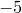

set <axis>range <range> [reverse]
The setting xrange controls the range of values spanned by the x-axes of plots. For function plots, this is also the domain across which the function will be evaluated. For example,
set xrange [0:10]
sets the first horizontal axis to run from 0 to 10. Higher numbered axes may be referred to be inserting their number after the x; the ranges of vertical axes may similarly be set by replacing the x with a y. Hence,
set y23range [-5:5]
sets the range of the 23rd vertical axis to run from  to 5. To request a range to be automatically scaled an asterisk can be used. The following command would set the x-axis to have an upper limit of 10, but does not affect the lower limit; its range remains at its previous setting:
set xrange [:10][*:*]
The keyword reverse is used to indicate that the two limits of an axis should be swapped. This is useful for setting auto-scaling axes to be displayed running from right to left, or from top to bottom.